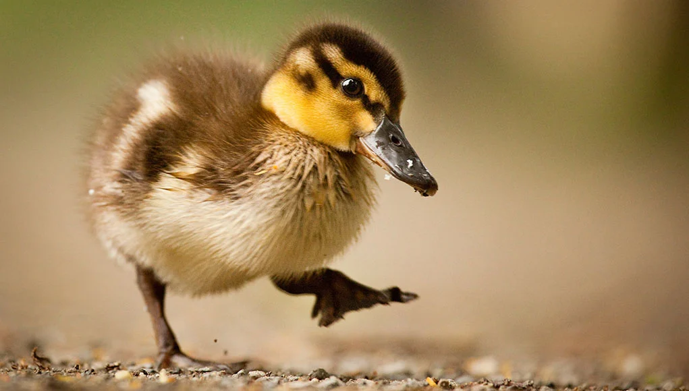

Welcome back to the pond friend!
Diving back into the pond, we are going in a different way this time! and instead of going in learning about the different types of ducks, we will be learning about some key features on a ducks body!
Lets dive in!
Going into key features of ducks, we can see that they posess qualities to help them live their aquatic lives, despite not being really a sea, river, and so on creature.
Quack Quack, lets see that Beak!
Looking at a ducks beak, you know that these guys mean buisness, especially with the facts I have for you about ducks beaks!
- Beaks!
- Duck beaks / bills, are soft at the edges! Because waterfowl often find their food by touch! Just like we sense things with the tips of our fingers.
- Two different kinds of eaters, where Dabbling ducks, will feed mostly at and near the surface of the water while diving ducks will dive beneath the waters surface in search of food.
- Mallards are the most common kind of duck and find their food in most farm fields- where these guys earn the title for the classic and original- 'duck bill.'
- Wood ducks have shorter arrower bills than most other dabbling ducks, And this lets them snip plants and grab small invertebrates!